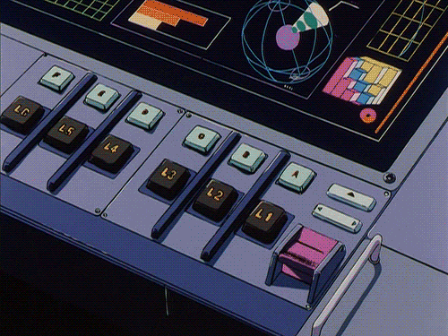

El viaje de una canción
como nacen y se producen las canciones de Prehistöricos en el estudio
De qué se trata
Este taller se trata de conocer cómo es el proceso de creación de una canción de Prehistöricos: desde la primera idea, una melodía o una letra, hasta convertirse en la versión final que verá la luz.
A lo largo de este encuentro en el estudio vamos a escuchar maquetas, ver cómo nacen los arreglos, cómo se toman decisiones de producción y cómo se trabaja con músicos dentro del estudio; en otras palabras, todo lo que hace posible que una canción llegue a su forma final.
También veremos cómo atravesar la duda, la desmotivación y cómo confiar en una idea para encontrar la forma de terminar una canción sin morir en el intento.
Es un espacio pensado para músicos, productores, compositores y cualquier persona interesada en descubrir cómo una idea logra transformarse en una canción. La invitación es a vivir ese proceso desde adentro y conocer cómo nacieron las canciones de Prehistöricos.
